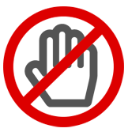

제보안내
- 동아쏘시오그룹 ‘VISION2025’미션
- - 윤리경영
- 윤리경영이란 회사경영 및 기업활동에 있어
‘기업윤리’를 최우선 가치로 생각하며,
투명하고 공정하며 합리적인 업무 수행을
추구하는 경영정신입니다.
- 사이버 감사실이란?
- 사이버 감사실은 동아쏘시오그룹 내 독립부서로 회사에 대한 경영감사
및 부정감사 업무를 수행하고 있습니다.
그룹사 임직원의 불공정한
업무처리나 직위를 이용한 부당한 요구 및 비리 사실에 대한 제보를 받으며
비공개 방식으로 처리됩니다.
귀하의 용기 있는 제보와 소중한 한마디가 부정부패가 없는 투명경영의
초석이 될 뿐 아니라 그룹사 및 이해관계자 모두의 발전에 도움이 됩니다.
- “ 여러분의 소중한의견을 자유롭게 제안 해 주세요. ”
- 제보자보호 및 신분보장
- 신분 누설 및 색출금지
- 모든 임직원은 직무상 또는 우연히 제보자의 신분을 인지하였더라도
제보자의 신분을 누설하여서는 안됨
- 제보자의 신분에 대한 문의, 제보자를 알아내기 위한 탐문활동 등
신분노출이 가능한 모든 행위 금지
- 본인의 동의 없이 제보자 및 조사 협조자의 신분 공개 또는 암시 금지
- 신분보호 의무 위반 시 관련자를 처벌할 수 있음
- 불이익 금지
- 제보자에 대한 불이익 금지 및 위반 시 관련자를 처벌할 수 있음
- 제보대상
-
- 대상회사 :
- 동아쏘시오그룹 전체 그룹사
-
- 대상행위 :
- 직무와 관련하여 이해관계자로부터 금품 또는 향응을 수수하는 행위
- 임직원의 불공정한 거래회사 선정 및 우월적 지위 남용
- 임직원의 회사 자산 불법/부당 사용
- 기타 직무와 관련된 비윤리적 행위
- ♦ 제보 내용이 사업의 투명성 제고 및 윤리적인 기업문화 정착에 구체적 기여를 한 경우, 당사 윤리경영위원회의 심의를 거쳐 소정의 사례를 하도록 하겠습니다.
-
- 
- 무고, 근거 없는 비방 등은 제보대상이 아닙니다.
- 제보방법 및 처리절차
-
- 제보방법
- 전화제보 : 02-920-8015
- 팩스(FAX) : 02-920-2325
- 서신(직접방문) : 서울 동대문구 천호대로 64 동아쏘시오홀딩스 감사실
- ♦ 처리결과 확인
귀하께서 제보하신 내용은 관련부서확인 등 필요한 절차를 거치게 되며, 답변을 드리기까지 최소한의 시간 15일이 소요됩니다.
또한 제보 내용에 따라 필요한 경우 관련부문으로 이관되어 조치될 수 있습니다.